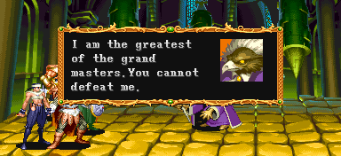

스테이지 10-6 보스 '나그파' |
기본 정보
클리어 시간 측정의 시작 시점
플레이어가 움직일 수 있는 시점부터 최단 시간 클리어 기록
파이터 / 엘프 4:55 |
|||||||||
분명 HP도 낮고 할 줄 아는건 라이트닝 볼트와 텔레포트 밖에 없지만 절대로 쉽지 않은 보스다. 아니 오히려 손에 꼽을 정도로 어려운 보스다. 블랙 드래곤과 맨티코어를 동반해서 공격 해 오기 때문이다. 그냥 무턱대고 싸우면 블랙 드래곤에 치이고 맨티오어에 치일 수 밖에 없으니 공략법을 꼭 익혀야 한다.
"우리가 워프되긴 했는데 어디로 워프된거지?"
"이 거대한 문은?"
그 후 문이 열리며 나그파가 있는 스테이지로 이동한다.
"그래 결국 여기까지 왔구나."

"나는 사천왕 중에서도 가장 위대한 사람이지. 날 이길 수는 없어."
이후 블랙 드래곤과 맨티코어가 난입하며 싸움이 시작된다.
"너 또한 내 형제가 미쳐간 것에 대한 책임이 있다."
"그야 내 알바 아니지."
"내 계획을 완성하는데 그녀석이 필요했어. 내게 압도적인 힘을 줄 계획 말이야!"
이후 서로 한판 뜨지만 나그파의 참패로 끝난다. (고우키의 순옥살 같은 화면효과가 나온다.)
"이번엔 너가 몰락할 차례다. Synn!"
xp는 맨티코어의 경우 5000xp, 블랙 드래곤의 경우 50000xp를 얻는다. 나그파를 처치하면 남아있는 맨티코어와 블랙 드래곤도 바로 처치가 되며 그 경우 나그파를 처치한 플레이어가 맨티코어와 블랙 드래곤의 xp도 얻게 된다. 나그파를 처치하기 전에 맨티코어/블랙 드래곤을 처치했다면 처치한 플레이어가 맨티코어/블랙 드래곤의 xp를 얻는다.
| ※ 붉은색은 파이터가 입는 데미지, 푸른색은 매직 유저가 입는 데미지. 클레릭/드워프는 파이터에 가까운 데미지를, 시프/엘프는 매직 유저에 가까운 데미지를 입는다. |
|
| 텔레포트 | |
| 무작위로 텔레포트를 하며 나타나는 곳도 무작위다. 그 자체로는 문제되는게 없지만 텔레포트 하는 도중에는 무적이기 때문에 아이스 스톰, 컨주어 엘리멘탈, 클라우드 킬, 파이널 스트라이크를 제외한 그 어떤 공격도 빗나가게 되니 주의하도록 한다. |
|
| 라이트닝 볼트 (28/40) | |
| 나그파가 할 줄 아는 공격은 이것 뿐이다. 1 대 1 상황이라면 피하는 것 자체는 쉬우나 블랙 드래곤이나 맨티코어와 티격태격하는 도중에 날아온다는게 상당히 피곤하게 만든다. 시전하는 동안은 D키를 쓸 수 없으며 또한 나그파가 무적이라는 것 또한 문제다. 당연한 이야기지만 주문 무효화 반지가 있으면 신경꺼도 되지만 그것을 노리고 여기까지 주문 무효화 반지를 가져오는 것은 비효율 적이다 (나그파 전후로 불 내성의 반지가 훨씬 효과적이다). |
|
▶ 일반 몬스터처럼 거의 모든 콤보가 다 먹힌다. 무한 콤보도 가능할 정도이다.
공통적으로 중요한 점은 움직일 수 있는 시점이 되자마자 슬라이딩을 해서 오른쪽으로 빨리 가야 브레쓰에 맞지 않는다는 점이다.
◎ 블랙 드래곤이 브레쓰를 내뿜는 동안에 끝을 보기
브레쓰 안전지대는 두곳이 있다. 스테이지 맨위와 블랙 드래곤의 밑이다.
- 블랙 드래곤의 밑에서 공격하는게 일반적이다. 나그파가 어느정도 접근할 때까지 기다렸다가 재빨리 붙어서 은단검이나 은화살을 던지고 콤보를 넣어서 끝낸다.
맨티코어가 얼마나 방해를 덜하느냐가 중요한데 만약 공중으로 날아버린다면 무척 난감 해 진다. 그래서 초반에 LB오일을 한개 던져서 맨티코어를 쓰러뜨리고 노리는게 좀 더 편하긴 한데 나그파도 같이 맞아버리면 그것도 문제다.
결국 플레이어의 경험에 따른 재빠른 상황판단 능력이 요구된다.
- 스테이지 맨 위쪽을 노린다면 나그파의 패턴이 가장 중요하다. 가장 좋은 패턴은 나그파가 시작부터 위쪽으로 텔레포트하는 경우이며 만약 라이트닝 볼트를 시전하는 패턴이라면 성공시키기 힘들다. 라이트닝 볼트 패턴중에도 위로 올라가도 맞지 않는 때가 있는가 하면 맞는 때가 있어서 애매하다.
나그파가 위쪽으로 올라왔다면 은단검이나 은화살을 조합해서 콤보를 넣고 끝내야 하는데 맨티코어가 방해되는 경우가 많다는게 또 문제다. 위험부담이 많은 방법이라 할 수 있다.
- LB오일을 이용해서 블랙 드래곤을 먼저 제거하는 방법도 있다. 파이터나 드워프라면 A+B를 이용해서 맨티코어도 끌어들이고 둘 다 처리 할 수도 있다. synn에게 LB오일을 쓸 수 없다는 뜻이니 잘 생각해서 사용하기 바란다.
◎ 블랙 드래곤과 맨티코어를 구석에 몰아넣기
이 스테이지의 왼쪽과 오른쪽은 약간씩 경사 져 있기 때문에 아래쪽에서 위쪽으로 올라오다보면 걸려서 제자리 걸음만 하게 된다. 이점을 이용해서 둘 다 공격을 봉쇄할 수 있다.
블랙 드래곤은 따로 신경쓰지 않아도 알아서 구석에 가 있지만 맨티코어는 그렇지 않다. 돌진을 유도해서 구석으로 들어가게 하는게 좋다. 그 후에는 라이트닝 볼트를 조심하면서 그림자 치기 위치에서 공격하면 된다. 자세한 방법은 클래스 별 공략에서 보도록 하자.